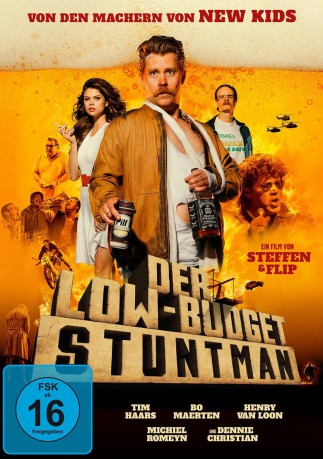

#9167 Der Low-Budget Stuntman
 
 IMDB-Wertung: 6.1 / 10
IMDB-Wertung: 6.1 / 10  Metascore: 0
Metascore: 0 
Die niederländische Komödie Der Low-Budget Stuntman wurde von dem Regie-Duo Haars und Van der Kuil inszeniert, das schon für die Hardcore-Comedy New Kids Nitro und dessen Fortsetzung verantwortlich war. Ein Stuntman aus Amateurfilmen, wird von seiner Frau nach Strich und Faden betrogen. Um seine Ehe zu retten, muss er Hollands erfolgreichste Schauspielerin ins Bett bekommen.
Jahr: 2017
Dauer: 78 Minuten
FSK:
Land: Niederlande Studio: Koch MediaTonspuren:
Untertitel: Deutsch,
Auflösung: 1080p (1920x720) Größe: 3840 MB
Genre: Komödie
Regisseur: Steffen Haars, Flip Van der Kuil
Drehbuch: Steffen Haars
Soundtrack: Tessa Rose Jackson, Michiel Marsman
Darsteller:
- Tim Haars als Ron Goossens
- Henry van Loon als Peter
- Thomas Acda als Thomas Acda
- Steef Cuijpers als Nees
- Laurens de Groot als Photographer
 Tygo Gernandt als Tygo Gernandt
Tygo Gernandt als Tygo Gernandt- Nick Golterman als Portier
- Steffen Haars als Zichzelf
- Dick Maas als Dick Maas
- Tim Oliehoek als Tim Oliehoek
 Huub Smit als Hans
Huub Smit als Hans- Maarten Swart als Customer at tattoo parlour
- Waldemar Torenstra als Waldemar Torenstra
- Maartje van de Wetering als Angela
- Flip Van der Kuil als Kankerpatient
 Nils Verkooijen als Nils Verkooijen
Nils Verkooijen als Nils Verkooijen- Bo Maerten als Bo Maerten
- Michiel Romeyn als Berrie
- Don Alphonso als Stuntdriver
- Jos Bakker als Opnameleider
- Pieter Bouwman als Rik
- Dennie Christian als Dennie Christian
- Karsten de Vreugd als Reporter
- Bert Hana als Ober
- Gerda Havertong als Gerda Havertong
- Martin Koolhoven als Martin Koolhoven
- Han Leopold als Police officer
- Roy Reymound als Jan
- Medina Schuurman als Inge
- Jules Seegers als TV Zundert Presentator
- Bonnie St. Claire als Bonnie St. Claire
- Eddy Terstall als Eddy Terstall
- Quinty Trustfull als Quinty Trustfull
- René van Berge Henegouwen als Verpleger
- Ad van Kempen als Wim
- Hanna van Vliet als Winnie
- Ilse Warringa als Jolanda
- Chris Zegers als Winston Post
Datei: X:\2017(G-M)\Low-Budget Stuntman, Der (2017, FSK, 1920x720).mkv seit 19.07.2018
Festplatte: HD 2017(A-Z)-2018(A-F)
 Es gibt insgesamt 148 Filme in der Gruppe '2017(G-M)'
Es gibt insgesamt 148 Filme in der Gruppe '2017(G-M)'